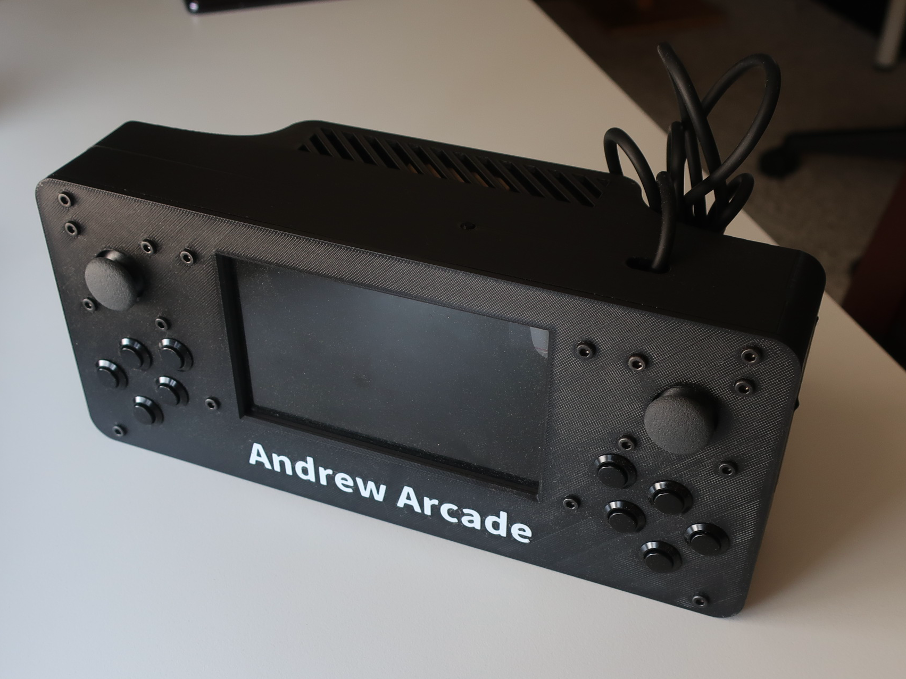

I build cool things with code.
Hi, I'm Andrew Cromar, a programming and hardware enthusiast. Soon to be studying Computer Science & Engineering at the University of California, Merced. I like game development and hardware projects.

I build cool things with code.
Hi, I'm Andrew Cromar, a programming and hardware enthusiast. Soon to be studying Computer Science & Engineering at the University of California, Merced. I like game development and hardware projects.

Andrew Arcade
A custom game console built on a Raspberry Pi 5 running Linux. Andrew Arcade plays Unity games created by me and other contributors, using Box64 emulation to translate x86 Unity builds to the Pi's ARM architecture. The current version features a redesigned case with improved ergonomics. Future plans include switching to a lighter Linux distribution for better performance and rewriting core apps in Godot, which can be compiled natively for ARM, eliminating the need for emulation.
Juicy Player Controller
Juicy Player Controller is a single C# script for Unity 3D that serves as a base player controller for both first-person and third-person games. It comes in two flavors: Orange for first-person and Lemonade for third-person. Features include walking, running, crouching, jumping, a stamina system, camera controls, and cursor management, all fully customizable with sensible defaults and an accessible API. Built on Unity's Input System, it also includes integrated error logging and inspector debugging tools to streamline development.
© 2026 Andrew Cromar. All rights reserved.